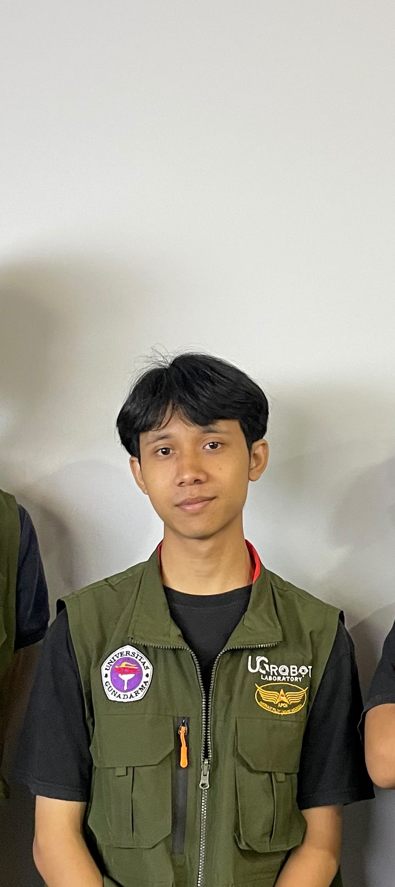

A4
MEMBER 04 · CLASS 3KB02
Muhammad Razan Al Hadziq
NPM: 20124949
Tulis biodata anggota 4 di sini. Kamu bisa menjelaskan minat, keahlian, hobi, pengalaman, atau cita-cita.

A4NPM: 20124949
Tulis biodata anggota 4 di sini. Kamu bisa menjelaskan minat, keahlian, hobi, pengalaman, atau cita-cita.